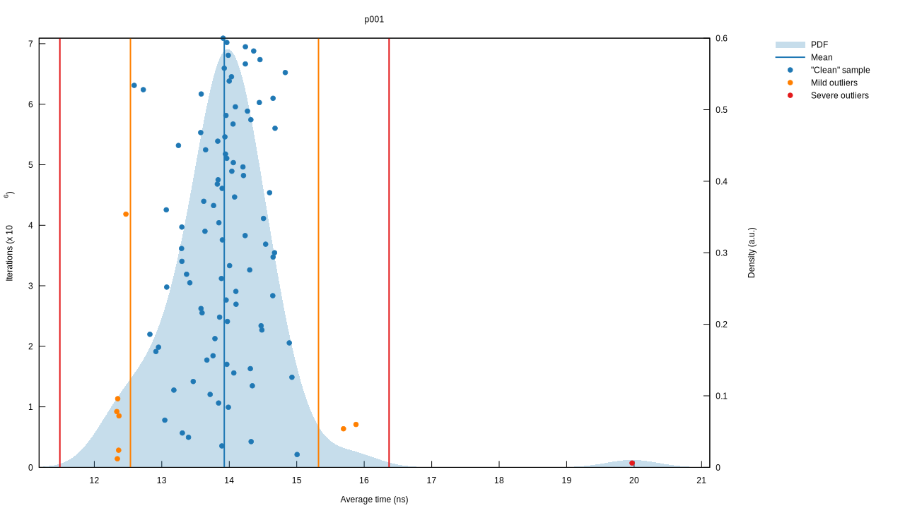

Problem 001
If we list all the natural numbers below 10 that are multiples of 3 or 5, we get 3, 5, 6 and 9. The sum of these multiples is 23.
Find the sum of all the multiples of 3 or 5 below 1000.
We can solve this by iterating from one to one thousand, filtering out numbers that are multiples of three or five, and summing the remaining numbers. Let's implement something along those lines.
fn main() { let result = (1..1_000) .filter(|n| [3, 5].iter().any(|m| n % m == 0)) .sum::<u32>(); println!("{}", result); }
Try it out. It runs in the order of microseconds with these inputs. This implementation is simple, demonstrates the intention, and runs in \( O(n) \) time with respect to the limit, which is \( 1000 \) here. However, we can improve the run time by about a thousand times with some number theory.
Gauss and Sequence Summation
Guass' method of summing a sequence of numbers starting with \( 1 \) doesn't rely on iteration.
\[ \sum_{i=1}^{n} i = \dfrac{n(n + 1)}{2} \tag{1}\label{1} \]
To see why this works, let's look at when \( n = 6\).
\[ \sum_{i=1}^{6} i = 1 + 2 + 3 + 4 + 5 + 6 \]
For each number \( x_i \) up to \( \frac{n}{2} \), pair it with \( x_{n-i+1} \).
\[ 1 + 6 = 7 \] \[ 2 + 5 = 7 \] \[ 3 + 4 = 7 \]
We have \( \frac{n}{2} \) pairs and each pair is equal to \( 7 \), or \( n + 1 \), hence our equation is \( \frac{n}{2} \cdot (n + 1) \) and equivalent to equation \( \eqref{1} \).
If \( n \) is odd, we won't be able to pair all of the numbers unless we include \( 0 \). Let's try this with \( n = 7 \).
\[ 0 + 7 = 7 \] \[ 1 + 6 = 7 \] \[ 2 + 5 = 7 \] \[ 3 + 4 = 7 \]
Now we have \( \frac{n + 1}{2} \) pairs but they all equal \( n \), so our equation is \( \frac{n + 1}{2} \cdot n \), which is also equivalent to equation \( \eqref{1} \). So we have a way to sum a sequence all of the numbers up a given \( n \), and we have a method of intuitively understanding why it works. But what if we didn't have the formula to begin with?
Recurrences and Mathematical Induction
We can start by defining the recurrence relation for the sequence.
\[ \begin{align} \\ S_{0} &= 0 \tag{2}\label{2} \\ S_{n} & = S_{n-1} + n, \quad \text{for } n \in \mathbb{N}_1 \tag{3}\label{3} \end{align} \]
A recurrence relation is an equation or set of equations that express each term of a sequence with respect to earlier terms, and often include one or more intial conditions. Recurrence relations lead to inherently recursive solutions. We can compute any \( S_{n} \), but only by caclulating all of the previous values in the sequence. In this instance, that would result in an \( O(n) \) runtime. The work we have to do is effectively unbounded because it scales with \( n \). It would be better to have a solution that has a known finite amount of work to perform, called a closed form solution.
One method to find the closed form of a recurrence is to guess the solution and then prove its correctness. We could start by looking at the smaller cases of the sequence and trying to see the pattern of the progression.
\[ 0, 1, 3, 6, 10, 15 \quad = \quad \frac{0 \cdot 1}{2}, \frac{1 \cdot 2}{2}, \frac{2 \cdot 3}{2}, \frac{3 \cdot 4}{2}, \frac{4 \cdot 5}{2}, \frac{5 \cdot 6}{2} \]
From that, we can define our proposition.
\[ S_{n} = \frac{n(n + 1)}{2}, \quad \text{for } n \in \mathbb{N}_0 \tag{4}\label{4} \]
A proposition is the statement we wish to prove, and a method we can use to prove it by is called mathematical induction. We define a basis, \( n_0 \), that is the smallest value of \( n \), and prove our proposition for \( n_0 \). We then define an induction, where \( n > n_0 \). Our earlier recurrence naturally fits into this framework.
First, we prove the basis by substituting the value of equation \( \eqref{2} \) into our proposition \( \eqref{4} \).
\[ \begin{align} S_0 & = \frac{0 \cdot (0 + 1)}{2} \\ & = 0 \end{align} \]
To prove the induction, we take our recurrence \( \eqref{3} \), which we know to be correct, and substitute our proposition \( \eqref{4} \) into it.
\[ \begin{align} S_n & = S_{n-1} + n \\ & = \frac{(n - 1) \cdot ((n - 1) + 1)}{2} + n \end{align} \]
Our goal is to get back to the proposition \( \eqref{4} \) from the equation with the substitution. Doing that is proof that our proposition holds. We solve the equation algebraically.
\[ \begin{align} \\ S_n & = \frac{(n - 1) \cdot ((n - 1) + 1)}{2} + n \\ & = \frac{(n - 1) \cdot n}{2} + \frac{2n}{2} \\ & = \frac{n(n - 1) + 2n}{2} \\ & = \frac{n(n - 1 + 2)}{2} \\ & = \frac{n(n + 1)}{2} \end{align} \]
Success! We can now be confident that our closed form solution is correct for all of the input values we care about.
Implementation
Our closed form solution has a finite amount of work to do regardless of the input value \( n \), so its runtime is \( O(1) \). Let's implement it.
fn sum_to(n: u32) -> u32 {
(n * (n + 1)) / 2
}
#
# assert_eq!(sum_to(0), 0);
# assert_eq!(sum_to(1), 1);
# assert_eq!(sum_to(2), 3);
# assert_eq!(sum_to(3), 6);
# assert_eq!(sum_to(4), 10);
# assert_eq!(sum_to(5), 15);
# assert_eq!(sum_to(6), 21);
# assert_eq!(sum_to(7), 28);
Since we're dividing by \( 2 \) here, you may think we can further optimise this by performing a logical right shift by one place instead. Doing so did not result in a change in performance when I benchmarked it, likely because Rust's compiler already takes care of simpler optimisations like this.
Now we can sum sequences like like \( 1 + 2 + 3 + 4 + 5 + \cdots + n \), but our problem statement is asking for something different. Instead of each term in our sequence incrementing by \( 1 \), we want it increment by an arbitrary amount \( x \) that corresponds to the base of the multiples that we are summing. So for \( x = 3 \), we want \( 3 + 6 + 9 + 12 + 15 \cdots + n \). This should result in a lower answer, because we are including less terms in the sequence. It's simply a matter of dividing our inner \( n \) by \( x \) and taking the floor of this value.
\[ \sum_{i=1}^{\lfloor \frac{n}{x} \rfloor} xi = \dfrac{n(\lfloor \frac{n}{x} \rfloor + 1)}{2} \tag{5}\label{5} \]
So now we have the afformentioned multiples-of-three sequence and we can calculate \( 5 + 10 + 15 + \cdots + n \). But as you can see from looking at the sequences, we're including \( 15 \) twice, and we would also include all of its multiples up to \( n \). \( 15 \) is the product of all of the values in the input set, hence we must subtract the sum of the multiples of the product of the input set. This brings us to our solution.
# fn sum_to(n: u32) -> u32 {
# (n * (n + 1)) / 2
# }
#
pub fn sum_all_multiples(xs: &[u32], n: u32) -> u32 {
let sum_multiples_for_x = |x| x * sum_to((n - 1) / x);
let multiples = xs.iter().map(sum_multiples_for_x).sum::<u32>();
let product_multiples = sum_multiples_for_x(&xs.iter().product::<u32>());
multiples - product_multiples
}
This solution allows us to generalise the problem statement.
Given a set of numbers \( xs \), find the sum of all of the multiples of these numbers that are under a limit \( n \).
The solution shows another way to think about equation \( \eqref{5}
\). sum_multiples_for_x multiplies sum_to with the value of x
because the sum should be x times larger than the sum of sequence
where each term is one larger than the previous term. But because we
still only want to sum values up to n, we divide the value we pass
to sum_to by x.
This implementation runs in the order of nanoseconds.
